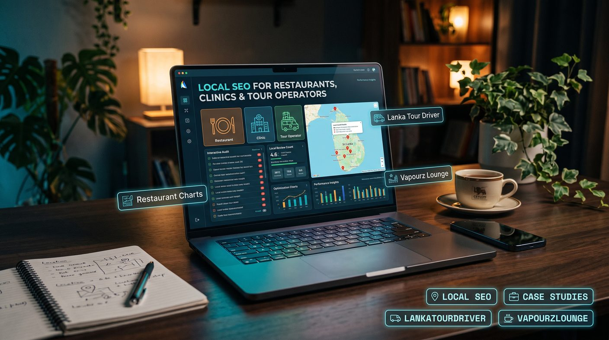

Local SEO helps restaurants, clinics and tour operators appear for searches tied to a place or service. Start with an accurate Google Business Profile, then add industry-specific pages (menus, service and practitioner pages, tour and destination pages), request honest reviews, protect patient privacy for clinics, and measure calls and bookings. Rankings depend on relevance, distance and prominence, so none can be guaranteed.
- What is local SEO?
- Why local SEO strategies differ by industry
- 1. Local SEO for restaurants in Sri Lanka
- 2. Local SEO for clinics in Sri Lanka
- 3. Local SEO for tour operators in Sri Lanka
- 4. Build a strong Google Business Profile
- 5. Create useful location and service pages
- 6. Technical SEO and mobile experience
- 7. Case studies: learning from real projects
- 8. Common local SEO mistakes to avoid
- 9. A practical 30-day local SEO plan
- Conclusion
What is local SEO?
Local SEO is the process of improving a business's visibility in search results for queries associated with a particular location or service area. These searches may include a town, district, landmark or phrases such as "near me".
Customers might search for:
- Best restaurants in Colombo.
- Dentist in Kurunegala.
- Private medical clinic in Kandy.
- Sri Lanka private tour driver.
- Ella day tours and sightseeing.
Local SEO includes optimising your Google Business Profile, improving relevant website pages, earning genuine reviews, maintaining consistent business details and developing trustworthy local references. Our local SEO service covers all of these.
Google explains local results in terms of relevance, distance and prominence. Businesses can improve the accuracy and relevance of their information and build a stronger reputation, but they cannot control how close a searcher is to a business. No optimisation method guarantees a particular ranking.
Why local SEO strategies differ by industry
Although the core principles are similar, customers in different industries search with different intentions. A restaurant visitor may want to see a menu and opening hours, while a patient may need to verify a practitioner's credentials. A traveller may compare itineraries, transport options and reviews before making a booking.
| Business type | Customer priorities | Local SEO focus |
|---|---|---|
| Restaurants | Menu, location, prices, photos and opening hours | Google Business Profile, menu pages, reviews and location-specific content |
| Clinics | Services, practitioner credentials, location, appointment availability and trust | Accurate profiles, practitioner and service pages, patient privacy and reliable contact information |
| Tour operators | Destinations, itineraries, transport, pricing, safety and booking options | Destination pages, tour pages, travel reviews, relevant partnerships and enquiry tracking |
The objective is not simply to rank for more keywords. It is to help the right customers find accurate information and take the next step.
1. Local SEO for restaurants in Sri Lanka
Restaurants compete for searches from people who may be ready to visit within minutes. Location, food preferences, opening hours, customer ratings and photos can influence which restaurant a potential customer considers.
Optimise your Google Business Profile
Claim and verify the eligible profile for your restaurant. Use its real-world business name and the most accurate primary category available. Add the correct address, telephone number, opening hours and website. Our Google Business Profile setup guide walks through every field.
Keep special hours updated for public holidays and temporary closures. If your restaurant offers takeaway, delivery, reservations or online ordering, provide the relevant information and links where supported.
Make your menu easy to find
Publish a dedicated menu page on your website where practical. Organise it into clear sections, such as breakfast, lunch, dinner, drinks and desserts. Keep prices and availability current, and make sure the page works well on mobile devices.
Customers may search for a cuisine, dish or dietary option rather than the restaurant's name. Useful menu information helps them decide whether your restaurant suits their needs.
Use authentic food and restaurant photos
Upload clear photos of actual dishes, dining areas, the entrance and the customer experience. Photos should accurately represent what visitors can expect. Avoid using stock photos as though they were images of your own food or premises.
Build a consistent review process
Invite customers to leave honest reviews without asking for a particular rating or offering rewards. Respond professionally to feedback and use recurring comments to improve food quality, waiting times and service. See our guide to getting more Google reviews in Sri Lanka.
Do not buy reviews or ask only customers you expect to be satisfied. Google's policies prohibit fake engagement and review manipulation.
Create useful local content
If your restaurant genuinely serves different customer groups or occasions, develop helpful content around those needs. Examples include group dining, family meals, event bookings or cuisine-specific menus. Mention your location naturally where it helps customers understand where you operate.
Avoid publishing dozens of near-identical pages for nearby towns when they provide no unique information or service value.
Measure restaurant enquiries
Monitor website clicks, calls, reservation enquiries, direction requests and completed bookings where tracking is available. Compare performance over time rather than relying on a single search from one device.
2. Local SEO for clinics in Sri Lanka
Clinics operate in a trust-sensitive environment. Patients may compare location, available services, practitioner qualifications, appointment options and accessibility before contacting a healthcare provider.
Clinic SEO should prioritise accurate information, professional credibility, patient privacy and compliance with applicable healthcare and advertising requirements.
Use accurate clinic and practitioner information
Maintain an eligible Google Business Profile with the correct clinic name, location, telephone number and opening hours. Select categories that accurately reflect the services provided.
Where relevant and appropriate, publish practitioner profiles that explain qualifications, professional registration, areas of practice and appointment arrangements. Verify all credentials and claims before publishing them.
Create clear pages for individual services
Patients may search for a specific service rather than a clinic by name. Organise your website so that important services have dedicated, useful pages where this genuinely helps patients. Our keyword research guide shows how to find the service terms people actually search.
Depending on the clinic, relevant pages might cover dental examinations, physiotherapy, eye examinations or general medical consultations. Explain what the service involves, who provides it, how appointments work and how patients can contact the clinic.
Do not create pages for treatments the clinic does not offer. Avoid unsupported promises about cures, guaranteed outcomes or medical results.
Demonstrate professional credibility
Healthcare content can influence important personal decisions. Make the authorship and professional review of medical information clear where applicable. Use reliable sources, keep information current and distinguish general educational information from individual medical advice.
Where appropriate, include verified qualifications, professional affiliations and relevant experience. Only publish details that can be substantiated.
Protect patient privacy in reviews and content
Never disclose a patient's identity, diagnosis, appointment history or other confidential details in a public response. Even when a reviewer shares personal health information, your reply should not confirm or reveal private details.
Invite genuine feedback in a neutral manner, subject to applicable professional rules and privacy obligations. Do not offer incentives for reviews or pressure patients to leave positive ratings.
Keep appointment information accurate
Display the correct telephone number, appointment process, operating hours and available booking options. If your clinic has several branches, make the address and contact details for each eligible location clear.
Only create separate Google Business Profiles for locations that independently meet Google's eligibility requirements. Do not use virtual offices or false addresses to target additional districts. Clinics outside the capital can learn from our guide to local SEO outside Colombo.
Measure meaningful clinic outcomes
Track appointment enquiries, calls, booking form submissions and other relevant actions. Handle analytics and enquiry data in line with privacy requirements. Avoid using patient-level health information for marketing measurement unless you have a lawful basis and appropriate safeguards.
3. Local SEO for tour operators in Sri Lanka
Tour operators face a different challenge: their customers may research a trip from another country long before arriving in Sri Lanka. They may compare destinations, itineraries, transport options, tour inclusions and customer experiences before choosing a provider.
For tour operators, local SEO often works best alongside destination-focused organic SEO and a website designed to turn international and domestic travellers into enquiries or bookings. If you also target overseas visitors, read how to target UK and UAE customers from Sri Lanka and our international SEO service.
Optimise your business information accurately
Use an eligible Google Business Profile that reflects how the tour business actually operates. A business with a customer-facing office may be eligible to display its location. A service-area business that visits customers should follow Google's address-display rules.
Do not create fake offices in popular tourist destinations just to appear in local searches. Specify the areas and services you genuinely provide, and make pickup arrangements clear.
Create dedicated tour and destination pages
Build pages around actual tours, itineraries and destinations. A useful page should answer practical questions before the traveller contacts you.
Include details such as:
- Destinations covered and itinerary options.
- Tour duration and approximate schedule.
- Transport arrangements and pickup locations.
- What is included and excluded.
- Pricing information or how to request a quote.
- Relevant cancellation, booking and payment terms.
- Accurate contact details and a clear enquiry or booking option.
Pages should be genuinely useful and distinct. Do not create a large number of nearly identical destination pages that simply replace one town name with another.
Target relevant travel searches
Research what prospective travellers actually search for. Depending on your services, useful topics might include private tours in Sri Lanka, airport transfers, day trips from Colombo, cultural tours, wildlife excursions or itineraries between specific destinations.
Use keyword research to understand demand and search intent (see our search intent guide), then prioritise the services your business can deliver reliably. A destination keyword is valuable only when the page matches what the searcher wants and the business can fulfil the request.
Use genuine travel reviews and photos
Reviews help travellers assess communication, punctuality, guide knowledge and the overall experience. Invite genuine customers to share honest feedback after completing their trip.
Use authentic photos of vehicles, destinations, tours and experiences where you have permission to publish them. Respect customer privacy and any permissions needed for identifiable people in photographs.
Never fabricate traveller testimonials or present a stock image as evidence of a completed tour.
Earn relevant travel industry mentions
Build relationships with relevant accommodation providers, travel publishers, destination websites and local businesses. Useful partnerships may lead to genuine referrals and editorial links when the content offers value to travellers. Our guide to building backlinks in Sri Lanka explains how.
Do not buy large volumes of unrelated backlinks or take part in schemes designed to manipulate rankings. Prioritise relevance, transparency and genuine business relationships.
Make international enquiries easy
Travellers may visit your website from different countries, time zones and mobile devices. Provide clear contact options, explain how quickly enquiries are normally answered and make the booking process straightforward.
Where relevant, offer accurate information in the languages your business can support. Use reliable currency and pricing details, and make it clear whether quoted prices include transport, tickets, meals, accommodation or other costs.
Measure leads and completed bookings
Track enquiry forms, phone calls, WhatsApp clicks, booking requests and confirmed bookings where possible. Distinguish qualified travel enquiries from general website visits.
Use appropriate analytics and campaign tracking to understand which destination pages and channels generate valuable enquiries. Avoid assuming that more traffic automatically means more revenue.
4. Build a strong Google Business Profile
For eligible local businesses, Google Business Profile is an important part of local visibility. Whatever your industry, check that your profile is accurate, verified and maintained.
- Use the genuine business name.
- Select the most relevant available primary category.
- Keep addresses or service areas accurate.
- Maintain current phone numbers, website links and opening hours.
- Add a useful description and relevant services where available.
- Upload genuine, high-quality photos.
- Invite honest customer reviews without incentives or pressure.
- Respond professionally to feedback.
- Resolve duplicate or outdated profiles appropriately.
Profile features vary by category and location. Use the fields available to your business instead of trying to force an unsuitable feature into the listing.
For a deeper explanation, read our guides to the Google Map Pack in Sri Lanka and ranking in Google Maps in Colombo.
5. Create useful location and service pages
Your website should make it easy for customers and search engines to understand what you offer and where you operate. Organise pages around genuine services and locations, with clear internal links between related content (see our internal linking guide).
A useful location or service page should include:
- A clear description of the service available.
- Accurate information about the location or service area.
- Details that help customers decide whether the business meets their needs.
- Original photos, relevant examples or evidence where available.
- Clear contact and enquiry options.
- Relevant links to related services and helpful guides.
A tour operator can publish a useful page about a specific itinerary. A restaurant can provide a dedicated menu and location page. A clinic can explain an actual service and how to book an appointment. For examples of district pages, see Colombo, Kandy and Kurunegala, or browse all service areas.
Do not claim to have a physical branch in a district unless that is true. If your business serves an area remotely or travels to customers, explain that arrangement accurately.
6. Technical SEO and mobile experience
Local visitors often use mobile devices to check opening hours, compare services or contact a business. A technically sound website helps them find the information they need.
Review these fundamentals:
- Pages load reliably on mobile connections.
- Important service and location pages can be crawled and indexed.
- Page titles and headings accurately describe the content.
- Telephone numbers and enquiry links are easy to use on mobile.
- Images are optimised without sacrificing useful visual quality.
- Forms work correctly and request only necessary information.
- Structured data, where used, matches visible and accurate business information.
- Internal links connect related service, location and informational pages.
Structured data can help search engines interpret business information, but it does not guarantee a rich result or a higher ranking. It should support accurate page content rather than replace it. See our schema markup guide and technical SEO audit checklist.
7. Case studies: learning from real projects
Case studies help potential clients understand how an SEO strategy was applied to a real business. They are most useful when they explain the starting point, work completed, measurement method and observed results without exaggerating what the work achieved.
LankaTourDriver: tourism and travel search intent
Tourism businesses need to connect destination research with useful service pages and clear enquiry paths. LankaTourDriver is a Sri Lankan private-driver and tour business, and our LankaTourDriver case study documents Search Console results: the site reached #1 for "sri lanka private tours with driver", with 798 clicks over three months.
When documenting SEO work for a tourism project, the useful evidence is organic search trends, destination-page performance, qualified enquiries and completed bookings. Report only metrics that have been measured and can be substantiated, and treat any single result as an example, not a promise.
Vapourz Lounge: local discovery for a customer-facing shop
For a customer-facing shop, local discovery depends on accurate business information, relevant service content, useful photos and an accessible contact or visit process. Our Vapourz Lounge case study covers vapourzlounge.co.uk, a UK shop that reached page one of Google UK, with 308 clicks and 39.5K impressions over three months according to Search Console.
That project is a UK retail example, not a Sri Lankan restaurant or clinic, but it shows the same principle: match each page to a real local search need and measure the outcome. Do not attribute ranking changes, traffic growth or enquiries to SEO unless the available evidence supports that conclusion.
Explore our SEO case studies for more project examples. Case studies should demonstrate the process and evidence behind the work, not imply that every business will achieve identical results.
8. Common local SEO mistakes to avoid
- Using inaccurate business details: keep contact information, hours and locations correct.
- Keyword stuffing: write naturally for customers instead of repeating location and service terms unnaturally.
- Creating fake locations: do not invent offices or branches to target additional towns.
- Publishing duplicate location pages: every page should offer distinct value to its intended audience.
- Buying or manipulating reviews: request genuine, unbiased feedback instead.
- Ignoring mobile usability: make sure visitors can find important information and contact you easily.
- Using unsupported claims: be particularly careful with healthcare claims, tourism promises and business credentials.
- Measuring rankings alone: monitor calls, enquiries, bookings and other meaningful outcomes.
- Expecting guaranteed rankings: local visibility depends on many factors, including distance and competition.
9. A practical 30-day local SEO plan
Week 1: review your current visibility
- Audit your Google Business Profile, where eligible.
- Check business name, categories, contact details and operating hours.
- Review your most important service and location pages.
- Identify technical issues that prevent customers or search engines from using the website.
Week 2: improve key pages and business information
- Update essential website content with accurate service details.
- Improve titles, headings, internal links and contact options; our on-page SEO checklist helps.
- Add useful photos and relevant service information.
- Make sure location pages reflect genuine coverage and provide unique value.
Week 3: strengthen trust and customer experience
- Introduce a compliant process for requesting honest reviews.
- Respond to existing feedback professionally.
- Correct outdated business listings where practical.
- Identify relevant industry relationships and local partnership opportunities.
Week 4: measure and prioritise
- Review Search Console and website analytics data.
- Monitor calls, enquiries, bookings or other relevant conversions.
- Identify pages and services that attract relevant visitors.
- Use the findings to prioritise the next round of improvements.
This plan is a practical starting point. It does not guarantee a particular ranking or amount of traffic within 30 days.
Conclusion
Local SEO works best when it reflects the needs of the customers you want to reach. Restaurants should make menus, photos and opening hours easy to find. Clinics should emphasise accurate information, professional credibility and patient privacy. Tour operators should build useful destination pages, explain itineraries clearly and make enquiries straightforward.
Across all three industries, the foundations stay the same: maintain accurate business details, publish helpful website content, request honest reviews, improve mobile usability and measure meaningful customer actions.
If you want to improve your business's local search visibility, explore our local SEO services, browse our case studies to learn more about our approach, or talk to an SEO specialist in Sri Lanka.